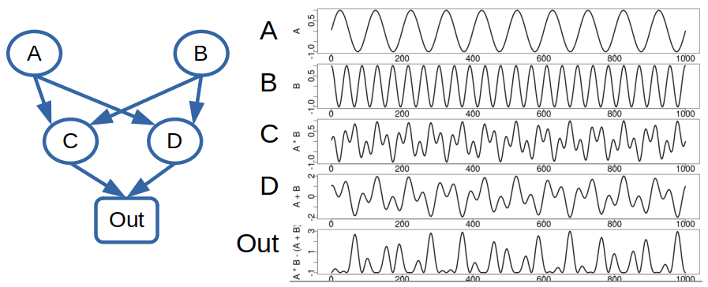
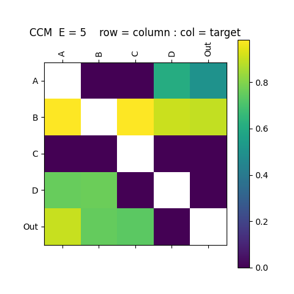
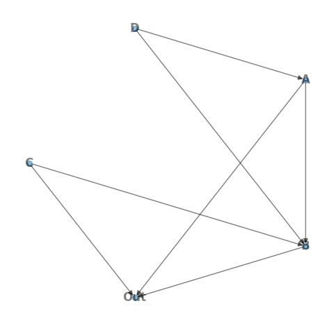

GMN Example
This simple example demonstrates the processing pipeline on a toy data set with no meaningful network structure or information flow.
The network consists of 5 nodes: A B C D Out. Each node represents a time series of length 1000 points with network structure and time series:

Interaction Matrix
The interaction matrix defines the GMN network structure and can be created with the InteractionMatrix.py python command-line application (see Interaction Matrix). Application arguments can be shown with the -h argument. Here, we create the interaction matrix from data file TestData_ABCD.csv using the EDM convergent cross mapping (CCM) metric, storing the output interaction matrix in ABCD_iMatrix_E5_tau-3_CCM.csv. CCM is passed an embedding dimension of E=5, and time delay of tau=-3.
./apps/InteractionMatrix.py -d ./data/TestData_ABCD.csv -oc ./output/ABCD_iMatrix_E5_tau-3 -ccm -E 5 -t -3 -P

Network Creation
The CreateNetwork.py application (see Create Network) reads the interaction matrix and creates the networkx directed graph object, here stored in a binary file using the python pickle module.
./apps/CreateNetwork.py -i ./output/ABCD_iMatrix_E5_tau-3_CCM.csv -o ./output/ABCD_Network_E5_tau-3_CCM.pkl -d 4 -P

Generative Mode
With a GMN network we can run GMN in generative mode according to the parameters specified in a configuration file (see Parameters). [EDM] parameters are defined in EDM Parameters.
Define the configuration file ./network/ABCD_Network_E5_tau-3_CCM.cfg as :
[GMN]
mode = Generate
predictionLength = 300
predictionStart = 700
outPath = ./output
dataOutCSV =
showPlot = True
plotType = state
plotColumns = Out A B C D
plotFile =
[Network]
name = ABCD 4 Driver
targetNode = Out
file = ./output/ABCD_Network_E5_tau-3_CCM.pkl
data = ./data/TestData_ABCD.csv
[Node]
info =
data =
configPath =
function = Simplex
[EDM]
lib =
pred =
E = 7
Tp = 1
knn = 0
tau = -3
theta = 3
exclusionRadius = 0
columns =
target =
solver =
embedded = False
validLib =
generateSteps = 0
libSizes =
sample = 0
random = False
includeData = False
seed = 0
[Scale]
factor = 1
offset = 0
From the python console import the gmn package, create the GMN object and run the network in generative mode:
import gmn
G = gmn.GMN( configFile = './network/ABCD_Network_E5_tau-3_CCM.cfg' )
G.Generate()
G.DataOut.tail( 5 )
Time A B C D Out
295 996 -2.487000e-01 0.986701 -0.5018 0.749998 -0.986295
296 997 -1.874000e-01 0.984824 -0.4708 0.793698 -0.990915
297 998 -1.253000e-01 0.963399 -0.4248 0.817698 -0.966998
298 999 -6.280002e-02 0.922292 -0.3671 0.822396 -0.919153
299 1000 -2.438686e-08 0.861684 -0.3016 0.808996 -0.867577
The output state plot shows the library (observed time series & state-space) in blue, and GMN generated values in orange.